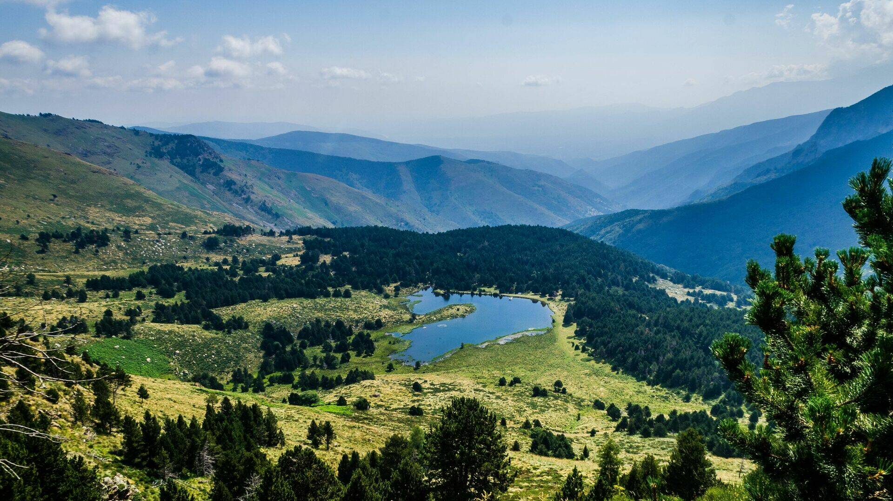

Préserver la vie sur Terre pour un avenir durable
En France, plus de 1 500 sites terrestres sont inclus dans le réseau Natura 2000 pour protéger les espèces et les habitats naturels prioritaires.
À l’échelle mondiale, des conventions telles que la Convention sur la diversité biologique (CDB) ou le programme REDD+ sont mises en place pour accompagner les pays dans la préservation de leurs forêts, de leurs sols et de leur faune.
Informer et sensibiliser les citoyens est essentiel. Les campagnes de sensibilisation permettent de créer une culture de respect envers la nature, d’inciter à adopter des comportements responsables, et de transmettre ces valeurs aux jeunes générations.
Des outils technologiques innovants permettent aujourd’hui de mieux surveiller l’état des forêts (via satellites), de détecter les menaces à la biodiversité et de gérer durablement les ressources naturelles grâce aux données ouvertes et à l’intelligence artificielle.
